Sykepenger er en viktig del av det norske trygdesystemet som sikrer lønnsmottakere økonomisk trygghet ved sykdom. For arbeidsgivere innebærer sykepengeordningen betydelige administrative og økonomiske forpliktelser som påvirker lønnskostnader og kontantstrøm. Forståelse av sykepengeordningen er essensielt for korrekt regnskapsføring og effektiv personaladministrasjon.
Seksjon 1: Grunnleggende om Sykepengeordningen
Sykepengeordningen er et lovpålagt trygdeytelse som dekker inntektsbortfall ved sykdom. Ordningen finansieres gjennom arbeidsgiveravgift og trygdeavgift, og administreres av NAV i samarbeid med arbeidsgivere.
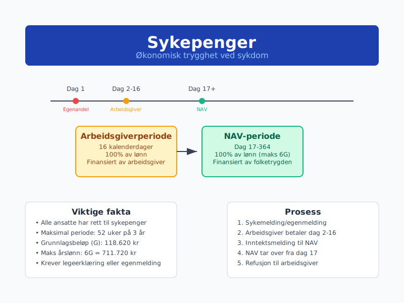
1.1 Lovgrunnlag og Rettigheter
Folketrygdloven regulerer sykepengeordningen:
- Rett til sykepenger: Alle lønnsmottakere med minimum 14 dagers ansettelse
- Opptjeningskrav: Ingen minimum opptjeningstid for ansatte
- Sykepengeperiode: Maksimalt 52 uker (364 dager) innen 3 år
- Ventetid: 1 dag (arbeidsgiverperioden starter dag 2)
1.2 Arbeidsgiverens Ansvar vs. NAVs Ansvar
Ansvarsfordeling mellom arbeidsgiver og NAV:
| Periode | Ansvarlig | Dekning | Finansiering |
|---|---|---|---|
| Dag 1 | Ingen | Egenandel (ikke dekket) | Arbeidstaker |
| Dag 2-16 | Arbeidsgiver | 100% av lønn | Arbeidsgiver |
| Dag 17-364 | NAV | 100% av lønn (maks G-grenser) | Folketrygden |
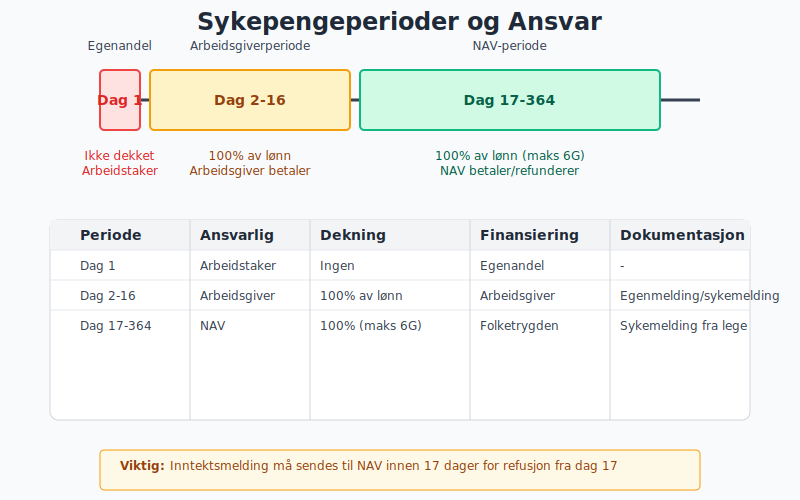
1.3 Grunnlagsbeløpet (G) og Beregningsgrunnlag
Grunnlagsbeløpet setter øvre grense for sykepengeberegning:
- 2024: G = 118.620 kroner
- Maksimal årslønn for sykepenger: 6G = 711.720 kroner
- Beregningsgrunnlag: Gjennomsnittlig månedslønn siste 3 måneder
Eksempel beregning:
Månedslønn: 50.000 kr
Årlønn: 600.000 kr (under 6G-grensen)
Sykepengeberegning: 50.000 kr × 100% = 50.000 kr/måned
Seksjon 2: Arbeidsgiverperioden (Dag 2-16)
2.1 Arbeidsgiverens Forpliktelser
Arbeidsgiverperioden pålegger arbeidsgiver full lønnsplikt:
Hovedregler:
- Varighet: 16 kalenderdager (3 uker og 2 dager)
- Dekningsgrad: 100% av ordinær lønn
- Dokumentasjon: Legeerklæring eller egenmelding
- Regnskapsføring: Som ordinær lønnskostnad
2.2 Egenmelding vs. Sykemelding
Dokumentasjonsalternativer for sykefravær:
| Type | Varighet | Vilkår | Kostnad |
|---|---|---|---|
| Egenmelding | Maksimalt 8 dager (kan deles) | Arbeidstakers vurdering | Gratis for arbeidsgiver |
| Sykemelding | Fra dag 1 eller etter egenmelding | Legens vurdering | Egenandel: 200-300 kr |
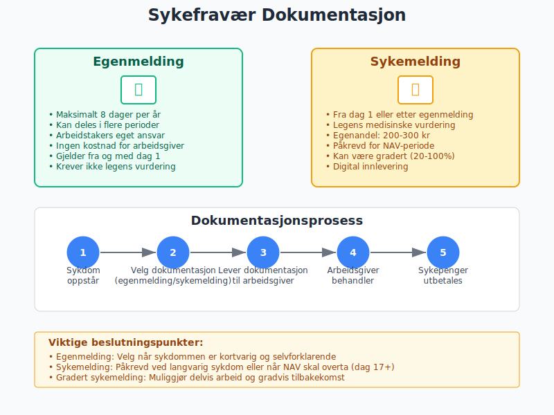
2.3 Regnskapsføring av Arbeidsgiverperioden
Bokføring av sykepenger i arbeidsgiverperioden:
Debet: Lønnskostnad
Kredit: Utbetalt lønn/Skyldig lønn
Månedlig periodisering:
Debet: Lønnskostnad (sykepenger)
Kredit: Påløpte lønnskostnader
Eksempel:
Ansatt med månedslønn 45.000 kr er syk i 10 dager
Daglønn: 45.000 ÷ 21,75 = 2.069 kr
Sykepengekostnad: 2.069 × 9 dager = 18.621 kr
(1 dag egenandel, 9 dager arbeidsgivertilskudd)
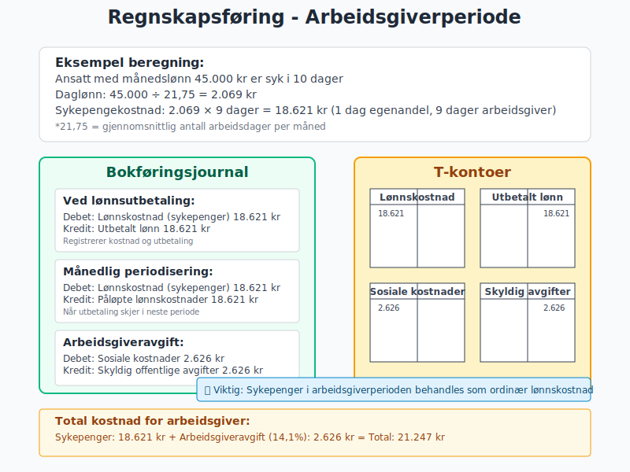
Seksjon 3: NAV-perioden (Dag 17-364)
3.1 Overgang til NAV
Overgangen fra arbeidsgiverperiode til NAV-periode:
Arbeidsgiverens oppgaver:
- Inntektsmelding: Sendes til NAV innen 17 dager
- Lønnsopplysninger: Siste 3 måneders lønnsdata
- Fraværsperiode: Dokumentasjon av sammenhengende sykefravær
- Refusjonskrav: Om arbeidsgiver skal motta sykepenger
3.2 Refusjon vs. Direkteutbetaling
To hovedmodeller for utbetaling i NAV-perioden:
| Modell | Utbetaling til | Arbeidsgiverens rolle | Regnskapsføring |
|---|---|---|---|
| Refusjon | Arbeidsgiver | Utbetaler lønn, mottar refusjon | Fordring på NAV |
| Direkteutbetaling | Arbeidstaker | Minimal (kun rapportering) | Ingen lønnskostnad |
3.3 Inntektsmelding til NAV
Inntektsmeldingen inneholder kritisk informasjon:
Obligatoriske opplysninger:
- Inntekt siste 3 måneder: Grunnlag for beregning
- Fastlønn vs. variabel lønn: Påvirker beregningsmetode
- Feriepenger: Behandling av opptjente feriepenger
- Naturalytelser: Firmabil, fri telefon, etc.
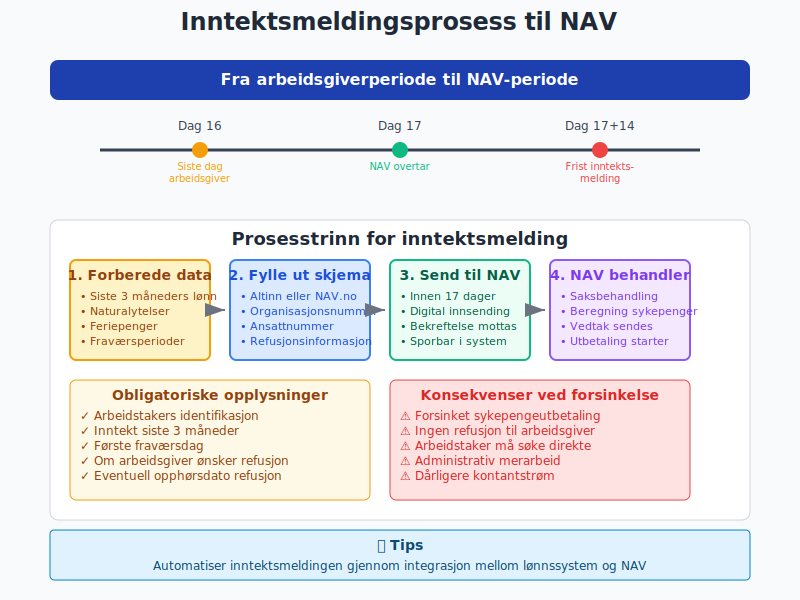
3.4 Regnskapsføring med Refusjon
Refusjonsmodellen krever spesiell regnskapsbehandling:
Månedlig bokføring:
Ved lønnsutbetaling:
Debet: Lønnskostnad
Kredit: Utbetalt lønn
Ved refusjonskrav:
Debet: Fordring NAV (sykepenger)
Kredit: Lønnskostnad
Ved mottatt refusjon:
Debet: Bank
Kredit: Fordring NAV (sykepenger)
Seksjon 4: Spesielle Situasjoner og Utfordringer
4.1 Gradert Sykmelding
Gradert sykmelding tillater delvis arbeid under sykdom:
Beregningseksempel:
Månedslønn: 50.000 kr
Sykemeldingsgrad: 60%
Arbeidsgrad: 40%
Utbetaling fra arbeidsgiver: 50.000 × 40% = 20.000 kr
Sykepenger fra NAV: 50.000 × 60% = 30.000 kr
Total utbetaling: 50.000 kr (100% av lønn)
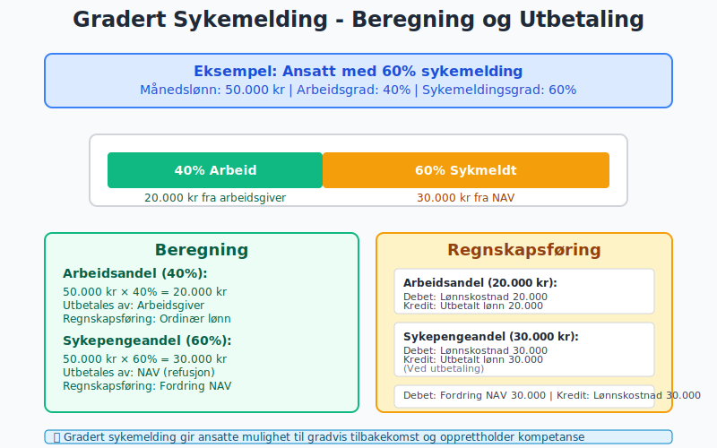
4.2 Kombinasjon med Andre Ytelser
Sykepenger kan kombineres med andre trygdeytelser:
| Ytelse | Kombinasjonsregel | Regnskapsimplikasjon |
|---|---|---|
| Uføretrygd | Gradert kombinasjon mulig | Kompleks lønnsberegning |
| Foreldrepenger | Gjensidig utelukkende | Enten/eller situasjon |
| Arbeidsavklaringspenger | Erstatter sykepenger | Overgang mellom ordninger |
4.3 Feriepenger under Sykdom
Feriepenger opptjenes ikke under sykeperioder:
Regnskapsføring:
- Arbeidsgiverperioden: Normal feriepengeoppbokking
- NAV-perioden: Ingen feriepengeoppbokking på sykepengedelen
- Avsetning: Redusert feriepengeforpliktelse
Normal månedslønn: 50.000 kr
Feriepengeoppbokking: 50.000 × 12% = 6.000 kr
Sykepengemåned (NAV):
Lønn fra arbeidsgiver: 0 kr
Feriepengeoppbokking: 0 kr
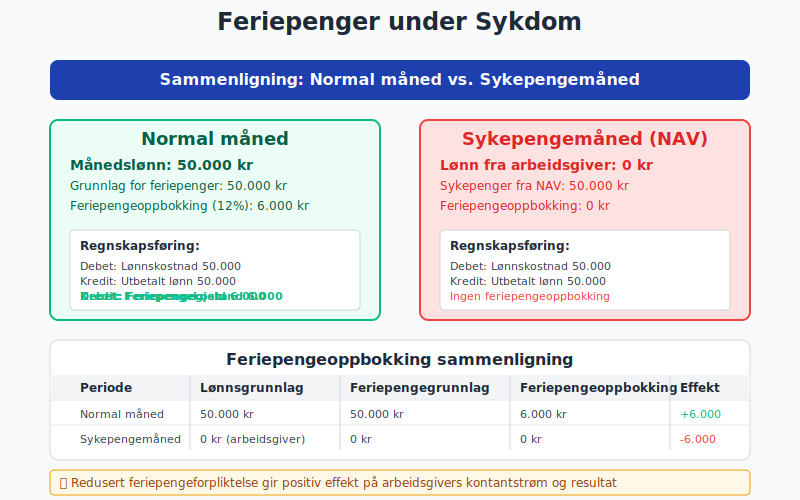
Seksjon 5: Administrative Systemer og Digitalisering
5.1 A-ordningen og Sykepengeintegrasjon
A-ordningen forenkler sykepengeadministrasjon:
Fordeler for arbeidsgivere:
- Integrert rapportering: Lønn og sykepenger i samme system
- Automatisk dataoverføring: Reduserer manuelt arbeid
- Sanntidsoppdatering: Raskere saksbehandling hos NAV
- Feilreduksjon: Mindre risiko for rapporteringsfeil
5.2 Digitale Verktøy og Automatisering
Moderne lønnssystemer automatiserer sykepengehåndtering:
| Funksjon | Fordel | Implementering |
|---|---|---|
| Automatisk inntektsmelding | Raskere NAV-behandling | API-integrasjon |
| Refusjonshåndtering | Forbedret kontantstrøm | Automatisk oppfølging |
| Rapportgenerering | Bedre kontroll og oversikt | Dashboard og alerts |
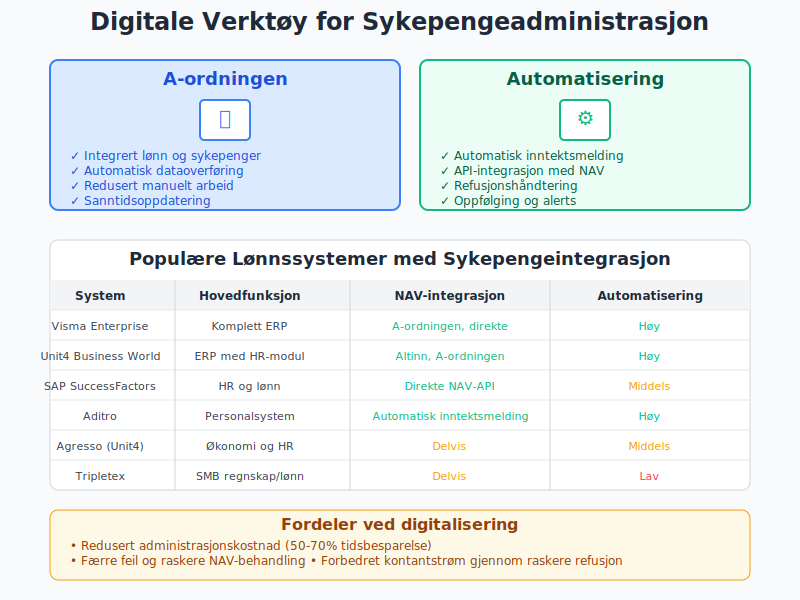
5.3 Compliance og Kontroll
Internkontroll for sykepengeadministrasjon:
Kontrollpunkter:
- Fristoverholdelse: Inntektsmeldinger innen 17 dager
- Dokumentkontroll: Valide sykemeldinger og egenmeldinger
- Beregningskontroll: Korrekt grunnlag og satser
- Refusjonskontroll: Sporbarhet av utestående fordringer
Seksjon 6: Kostnadsanalyse og Budsjettering
6.1 Totalkostnad for Arbeidsgiver
Sykepengerkostnader utgjør betydelig kostnadspost:
Direkte kostnader:
- Arbeidsgiverperioden: 16 dager full lønn
- Administrasjonskostnader: HR-tid og systemkostnader
- Vikarieringskosotnader: Midlertidig personale
- Produktivitetstap: Redusert effektivitet
Indirekte kostnader:
- Opplæringskostnader: For vikarer og nye ansatte
- Kompetansetap: Midlertidig tap av spesialkompetanse
- Planleggingsutfordringer: Prosjektforsinkelser
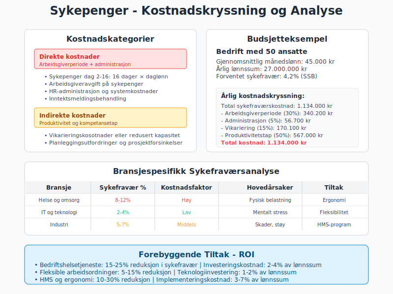
6.2 Budsjettmessige Hensyn
Budsjettering av sykepengerkostnader:
Erfaringsbasert budsjetting:
Gjennomsnittlig sykefravær: 4,2% (SSB 2023)
Årlig lønnssum: 10.000.000 kr
Estimert sykepengerkostnad: 420.000 kr
Arbeidsgiverperiode (ca. 30%): 126.000 kr
Bransjespesifikke variasjoner:
| Bransje | Sykefravær % | Kostnadsfaktor |
|---|---|---|
| Helse og omsorg | 8-12% | Høy |
| IT og teknologi | 2-4% | Lav |
| Industri | 5-7% | Middels |
| Offentlig sektor | 6-8% | Middels-høy |
6.3 Forebyggende Tiltak og ROI
Investeringer i sykefraværsreduksjon:
Tiltak og forventet effekt:
- Helse- og miljøarbeid (HMS): 10-20% reduksjon
- Fleksible arbeidsordninger: 5-15% reduksjon
- Bedriftshelsetjeneste: 15-25% reduksjon
- Fysisk tilrettelegging: 10-30% reduksjon
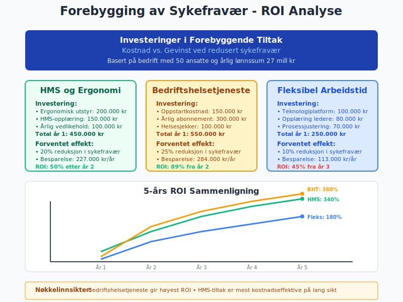
Seksjon 7: Skattemessige Aspekter
7.1 Skattepliktig Inntekt
Sykepenger er skattepliktig inntekt:
For arbeidstaker:
- Ordinær skattesats: Som vanlig lønnsinntekt
- Trygdeavgift: 8,2% (redusert sats 5,1% for pensjonister)
- Forskuddstrekk: Trekkes automatisk
For arbeidsgiver:
- Arbeidsgiveravgift: Påløper ikke på sykepenger fra NAV
- Refusjon: Ikke skattepliktig inntekt for arbeidsgiver
- Feriepenger: Redusert avsetning gir skattemessig gevinst
7.2 MVA-behandling
Merverdiavgift påvirkes ikke av sykepengeordningen:
- Lønnskostnader: Ikke MVA-pliktige transaksjoner
- Sykepenger: Behandles som lønnskostnader
- Administrasjonskostnader: Normal MVA-fradragsrett
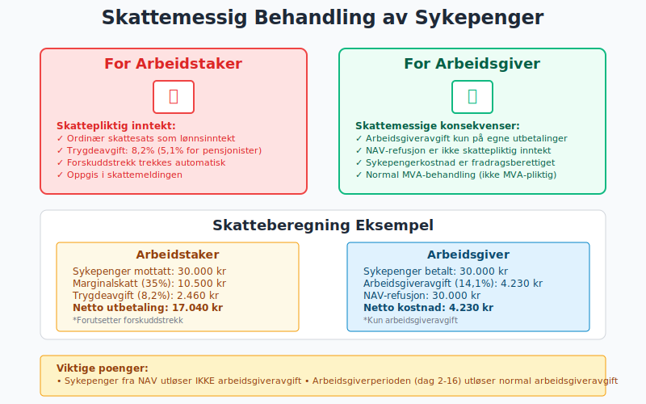
Seksjon 8: Internasjonale Aspekter
8.1 EØS-regelverket
Trygdekoordinering innen EØS påvirker sykepengerettigheter:
Hovedprinsipper:
- Likebehandling: EØS-borgere behandles likt
- Sammmenregning: Opptjening fra flere EØS-land
- Utbetaling: Kan skje på tvers av landegrenser
- Arbeidsgiveransvar: Følger arbeidsstedet
8.2 Utstasjonerte Arbeidstakere
Utstasjonering kompliserer sykepengeforhold:
| Situasjon | Gjeldende regelverk | Arbeidsgiverens ansvar |
|---|---|---|
| Korttids utstasjonering (<2 år) | Norske regler | Normal arbeidsgiverperiode |
| Langtids utstasjonering (>2 år) | Vertslandets regler | Lokale bestemmelser |
| Tredjeland | Bilaterale avtaler | Avtaleavhengig |
8.3 Digitale Nomader og Fjernarbeid
Moderne arbeidsformer skaper nye utfordringer:
Avklaringsbehov:
- Arbeidssted vs. bosted: Hvilket regelverk gjelder?
- Midlertidig vs. permanent: Tidsaspektets betydning
- Dokumentasjon: Bevis for arbeidssted og opphold
- Teknisk løsning: Systemintegrasjon på tvers av land
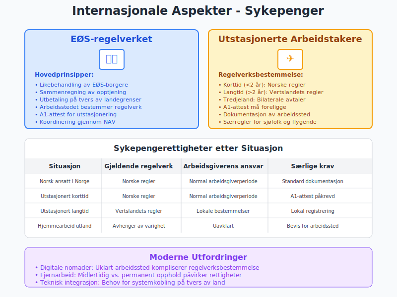
Seksjon 9: Fremtidige Utviklingstrekk
9.1 Digitalisering og Automatisering
Teknologiutvikling endrer sykepengeadministrasjon:
Kommende innovasjoner:
- AI-assistert saksbehandling: Raskere NAV-behandling
- Blockchain-basert dokumentasjon: Manipulasjonssikre sykemeldinger
- Prediktiv analyse: Forebygging basert på datamønstre
- Integrerte helsedata: Kobling mellom helse- og lønnssystemer
9.2 Politiske Reformforslag
Politisk debatt om sykepengeordningen:
Aktuelle forslag:
- Utvidet arbeidsgiverperiode: Fra 16 til 21-30 dager
- Gradert egenandel: Økende egenandel ved gjentatt sykefravær
- Bonus/malus-system: Belønning for lavt sykefravær
- Regionalisering: Tilpasning til lokale arbeidsmarkedsforhold
9.3 Bærekraft og Demografiske Utfordringer
Langsiktige utfordringer for ordningen:
Demografiske faktorer:
- Aldrende befolkning: Økt sykefravær i eldre aldersgrupper
- Arbeidslivsutvikling: Endrede jobber og belastninger
- Kostnadsvekst: Økte kostnader for folketrygden
- Finansieringsbehov: Behov for økte avgifter eller kutt
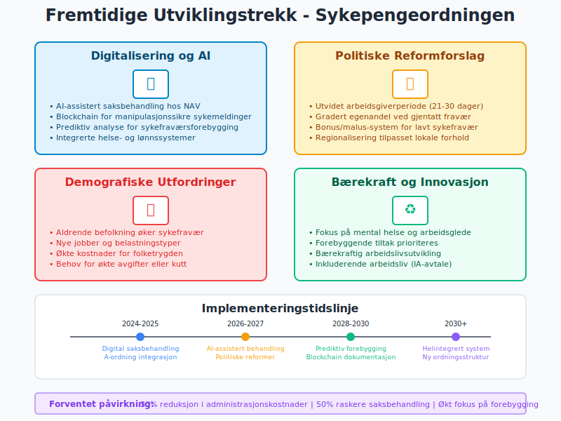
Seksjon 10: Praktiske Verktøy og Ressurser
10.1 Systemer og Teknologi
Anbefalte verktøy for sykepengeadministrasjon:
| System | Hovedfunksjon | Integrasjoner |
|---|---|---|
| Visma Enterprise | Komplett lønnssystem | A-ordningen, NAV |
| Unit4 Business World | ERP med lønnsmodul | Altinn, Arbeidstilsynet |
| SAP SuccessFactors | HR og lønn | Direkte NAV-integrasjon |
| Aditro | Lønn og personalsystem | Automatisk inntektsmelding |
10.2 Compliance-sjekklister
Månedlige oppgaver:
- Kontroller påløpte sykepenger i lønnskjøringen
- Avstem utestående fordringer mot NAV
- Rapporter sykefraværsstatistikk til ledelsen
- Oppdater budsjetter med faktiske kostnader
Årlige oppgaver:
- Gjennomgå sykepengerutiner og prosedyrer
- Evaluere kostnadsutviklingen og årsaker
- Vurder investeringer i forebyggende tiltak
- Oppdater systemintegrasjoner og automasjonsgrad
10.3 Nøkkeltall og KPIer
Viktige styringsparametere:
Sykefraværs-KPIer:
- Samlet sykefravær: Totale fraværsdager/totale arbeidsdager
- Korttidsfravær: Fravær under 16 dager (arbeidsgiverperioden)
- Langtidsfravær: Fravær over 16 dager (NAV-perioden)
- Gjentakende fravær: Samme ansatt, flere perioder
Kostnadsindikatorer:
- Sykepengerkostnad per ansatt: Årlig beløp/gjennomsnittlig antall ansatte
- Arbeidsgiverperiode vs. total kostnad: Andel av total sykepengerkostnad
- Administrasjonskostnader: Indirekte kostnader som andel av direkte
- ROI forebyggende tiltak: Besparelser vs. investeringskostnader
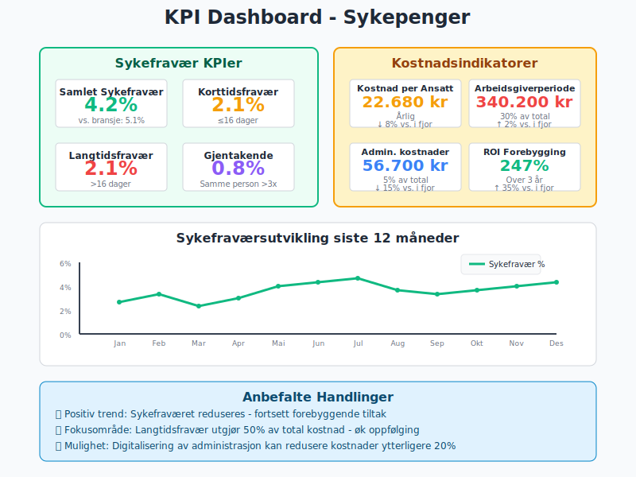
Seksjon 11: Juridiske Aspekter og Tvister
11.1 Arbeidsrettslige Problemstillinger
Vanlige konfliktsituasjoner:
Oppsigelse under sykdom:
- Verneregler: Begrenset oppsigelsesadgang
- Dokumentasjonskrav: Saklig grunn utover sykdom
- Tilretteleggingsplikt: Arbeidsgivers forpliktelser
- Prosessuelle krav: Korrekt saksbehandling
Mistanke om misligheter:
- Kontrollrettigheter: Arbeidsgivers kontrollmuligheter
- Personvernhensyn: GDPR og personopplysningsloven
- Bevisbyrde: Krav til dokumentasjon
- Sanksjoner: Konsekvenser ved mislighold
11.2 NAV og Forvaltningspraksis
Klageadgang og rettssikkerhet:
Klageprosess:
- Klage til NAV: Innen 6 uker
- Ny vurdering: NAV gjenopptar saken
- Klage til NAV Klageinstans: Hvis ikke medhold
- Sivilrettslig søksmål: Siste instans
Vanlige klageområder:
- Beregningsgrunnlag: Uenighet om lønnsbasis
- Periodeberegning: Start- og sluttdato for ytelser
- Refusjonskrav: Behandling av arbeidsgiverrefusjon
- Frister: Konsekvenser av oversittelse
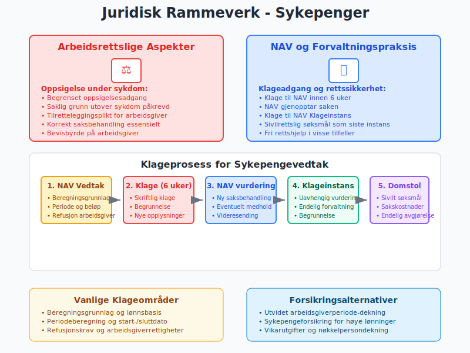
11.3 Forsikringsløsninger
Tilleggsdekning gjennom forsikring:
Sykepengeforsikring:
- Utvidet arbeidsgiverperiode: Dekning utover 16 dager
- Vikarutgifter: Kostnader ved vikariering
- Lederdekning: Særskilt dekning for nøkkelpersonell
- Sykelønn over 6G: Dekning for høye lønninger
Forsikringsbetingelser:
| Type | Dekningsgrad | Egenandel | Premie |
|---|---|---|---|
| Basis sykepengeforsikring | 80-100% | 0-5 dager | 0,5-1,5% av lønnssum |
| Utvidet dekning | 100% + vikar | 0 dager | 1,5-3% av lønnssum |
| Premium løsning | 100% + tillegg | Ingen | 3-5% av lønnssum |
Konklusjon
Sykepenger representerer en kompleks krysning mellom trygderett, arbeidsrett og regnskapsføring som krever grundig forståelse og profesjonell administrasjon. Fra den innledende 16-dagers arbeidsgiverperioden til den langvarige NAV-perioden, påvirker sykepengeordningen alle aspekter av personaladministrasjon og økonomistyring.
Nøkkelinnsikter:
- Dobbelt ansvar: Arbeidsgivere har både juridiske og økonomiske forpliktelser
- Teknologisk transformasjon: Digitalisering forenkler administrasjon men krever systemintegrasjon
- Kostnadskontroll: Proaktiv forebygging og effektiv administrasjon reduserer totalkostnader
- Compliance-fokus: Korrekt håndtering minimerer juridisk risiko og sikrer ansattes rettigheter
Praktisk anvendelse:
For regnskapsførere, personalledere og bedriftsledere er forståelse av sykepengeordningen kritisk for:
- Nøyaktig kostnadsberegning og budsjettplanlegging
- Effektiv kontantstrømstyring gjennom forutsigbar refusjonshåndtering
- Risikominimering gjennom korrekt dokumentasjon og fristoverholdelse
- Strategisk personalplanlegging som inkluderer sykefraværskostnader
Fremtidsrettet perspektiv:
Sykepengeordningen utvikler seg kontinuerlig med teknologiske fremskritt, demografiske endringer og politiske reformer. Bedrifter som investerer i moderne administrasjonssystemer, forebyggende helsearbeid og robust internkontroll vil være best posisjonert for fremtidige endringer.
Den praktiske håndteringen av sykepenger er ikke bare en administrativ oppgave - det er en strategisk mulighet for å demonstrere ansvarlighet som arbeidsgiver, optimalisere driftskostnader og bygge et bærekraftig arbeidsfellesskap som prioriterer både produktivitet og ansattes velferd.